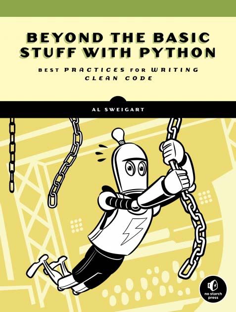

Beyond the Basic Stuff with Python [Chapter 03 ~ 04]

Chapter 3 - Code Formatting with Black [Black과 함께하는 코드 포매팅]
3.1_ Style Guides and PEP 8 [스타일 가이드 및 PEP 8]
- PEP 8 (Python Enhancement Proposal 8)
Python 핵심 개발 팀이 작성한 스타일 가이드 중 하나
Link - https://peps.python.org/pep-0008/
- PEP 8 Code Lay-out
-
Indentation [들여 쓰기]
들여쓰기 레벨당 4개의 공백을 사용하자
# Correct: # 여는 구분자와 맞추어 정렬 foo = long_function_name(var_one, var_two, var_three, var_four) # 함수 인자들을 나머지 코드와 구분하기 위해 4칸의 공백(들여쓰기)를 추가 def long_function_name( var_one, var_two, var_three, var_four): print(var_one) # 행을 붙이는 들여쓰기는 한 단계 더 추가 foo = long_function_name( var_one, var_two, var_three, var_four)# Wrong: # 세로 맞춤을 사용하지 않을 때 첫 번째 줄에 인수를 작성하는 것은 금지 foo = long_function_name(var_one, var_two, var_three, var_four) # 들여쓰기가 구별되지 않으므로 추가적인 들여쓰기가 필요 def long_function_name( var_one, var_two, var_three, var_four): print(var_one)4칸 공백 큐직은 연속된 줄에 대해 선택 사항이다.
# 들여쓰기가 된 문단에서는 4칸이 아닌 다른 간격으로도 들여쓰기 가능 foo = long_function_name( var_one, var_two, var_three, var_four)if 문의 조건부분이 여러 줄에 걸쳐 쓰여져야 할만큼 길 경우, 2개의 문자 키워드(예: if)와 공백 하나, 그리고 “(“를 조합하면 다음 줄의 조건부문에 자연스러운 4칸의 들여쓰기가 생성된다.
그러나 이렇게 되면 if 문 안에 중첩된 들여쓰기된 코드 블록도 같은 4칸의 들여쓰기를 하게 되어 시각적으로 충돌이 발생할 수 있다.
PEP은 이러한 조건부문과 중첩된 if 문 내부의 코드 블록을 시각적으로 구분하는 방법(또는 구분하지 않는 방법)에 대해 명시적인 입장을 표하지 않는다. 이러한 상황에서 적용 가능한 대안은 다음과 같다(하지만 이에 국한되지 않는다)# 추가 들여쓰기 없이 현재의 들여쓰기 유지 if (this_is_one_thing and that_is_another_thing): do_something() # 구문 하이라이트를 지원하는 편집기에서 구분이 가능한 주석 추가. if (this_is_one_thing and that_is_another_thing): # 두 조건이 모두 참이므로, do_something() 할 수 있습니다. do_something() # 조건문의 연속된 줄에 들여쓰기를 추가합니다. if (this_is_one_thing and that_is_another_thing): do_something()여러 줄 구성에서의 } , ] , )
# 목록의 마지막 줄에서 공백이 아닌 첫 번째 문자 아래에 정렬될 수 있습니다. my_list = [ 1, 2, 3, 4, 5, 6, ] result = some_function_that_takes_arguments( 'a', 'b', 'c', 'd', 'e', 'f', ) # 다음과 같이 여러 줄 구성을 시작하는 줄의 첫 번째 문자 아래에 정렬될 수 있습니다. my_list = [ 1, 2, 3, 4, 5, 6, ] result = some_function_that_takes_arguments( 'a', 'b', 'c', 'd', 'e', 'f', ) -
Tabs or Spaces? [탭 또는 스페이스?]
스페이스가 선호되는 들여쓰기 방법이며 탭은 이미 탭으로 들여쓰기가 된 코드와 일관성을 유지하기 위해서만 사용해야 한다.
파이썬은 들여쓰기에 탭과 스페이스를 혼용하는 것을 허용하지 않는다. -
Maximum Line Length [최대 줄 길이]
Python 표준 라이브러리는 보수적이며, 각 줄을 79자로 제한한다. (그리고 docstrings/주석은 72자까지)
긴 줄을 감싸는 선호되는 방법은 (), [] 및 {} 안에 Python의 묵시적 줄 연속을 사용하는 것이다.
식을 괄호로 묶으면 긴 줄을 여러 줄로 나눌 수 있다. 줄 연속을 위해 백슬래시를 사용하는 것보다 우선적으로 사용해야 한다.
때때로 백슬래시는 적절할 수 있다.
예를 들어 길고 여러 개의 ‘with’-문은 Python 3.10 이전에는 암시적 연속을 사용할 수 없었으므로 백슬래시가 허용되었다.with open('/path/to/some/file/you/want/to/read') as file_1, \ open('/path/to/some/file/being/written', 'w') as file_2: file_2.write(file_1.read()) -
Should a Line Break Before or After a Binary Operator? [이항 연산자 앞 또는 뒤에서 줄 바꿈을 해야하나요?]
수십 년 동안 권장되는 스타일은 이진 연산자 다음에 중단하는 것이었다.
그러나 이것은 두 가지 방식으로 가독성을 손상시킬 수 있다.
연산자는 화면의 여러 열에 흩어져 있는 경향이 있고 각 연산자는 피연산자에서 이전 줄로 이동된다.
여기서 눈은 어떤 항목이 더해지고 어떤 항목이 뺄 것인지를 구분하기 위해 추가 작업을 수행해야 한다.# Wrong: # 연산자는 피연산자와 멀리 떨어져 있다. income = (gross_wages + taxable_interest + (dividends - qualified_dividends) - ira_deduction - student_loan_interest) # Correct: # 연산자와 피연산자를 쉽게 매치할 수 있다. income = (gross_wages + taxable_interest + (dividends - qualified_dividends) - ira_deduction - student_loan_interest) -
Blank Lines [공백 라인]
두 개의 빈 줄로 최상위 함수 및 클래스 정의를 둘러싼다.
클래스 내부의 메서드 정의는 하나의 빈 줄로 둘러싸여 있다.
관련 기능 그룹을 구분하기 위해 여분의 빈 줄이 (드물게) 사용될 수 있다.
관련된 한 줄짜리 묶음(예: 더미 구현 집합) 사이에 빈 줄을 생략할 수 있다.
논리 섹션을 나타내기 위해 함수에서 빈 줄을 (드물게) 사용한다. -
Source File Encoding [소스 파일 인코딩]
핵심 Python 배포판의 코드는 항상 UTF-8을 사용해야 하며 인코딩 선언이 없어야 한다.
표준 라이브러리에서 UTF-8이 아닌 인코딩은 테스트 목적으로만 사용해야 한다.
ASCII가 아닌 문자는 가급적이면 장소와 사람 이름을 표시할 때만 사용, ASCII가 아닌 문자를 데이터로 사용하는 경우 z̯̯͡a̧͎̺l̡͓̫g̹̲o̡̼̘ 및 바이트 순서 표시와 같은 잡음이 많은 유니코드 문자를 사용하지 말아야 한다.
Python 표준 라이브러리의 모든 식별자는 ASCII 전용 식별자를 사용해야 하며 가능할 때마다 영어 단어를 사용해야 한다(대부분의 경우 영어가 아닌 약어 및 기술 용어가 사용됨).전 세계 사용자를 대상으로 하는 오픈 소스 프로젝트는 유사한 정책을 채택하도록 권장된다.
-
Imports [임포트]
import는 일반적으로 별도의 줄에 있어야 한다.
# Correct: import os import sys # Wrong: import sys, os # Corrent: from subprocess import Popen, PIPEimport는 다음 순서로 구분되어야 한다.
- 표준 라이브러리 import
- 관련 서드파티 import
- 로컬 애플리케이션/라이브러리 import
각 import 그룹 사이에 빈줄을 넣어야 한다.
절대 경로 가져오기가 권장된다. 가독성이 좋으며 가져오기 시스템이 잘못 구성된 경우(예: 패키지 내의 디렉터리가 ‘sys.path’로 끝나는 경우) 적어도 더 나은 오류 메시지를 제공하는) 경향이 있으므로 권장한다
import mypkg.sibling from mypkg import sibling from mypkg.sibling import example명시적 상대 경로 가져오기는 절대경로 가져오기의 허용 가능한 대안이며, 불필요하게 복잡한 패키지 레이아웃을 처리할 땐 절대경로 가져오기를 사용하는 것 보다 나을 수 있다.
from . import sibling from .sibling import example표준 라이브러리 코드는 복잡한 패키지 레이아웃을 피하고 항상 절대 가져오기를 사용해야 한다.
클래스 포함 모듈에서 클래스를 가져올 때 일반적으로 다음과 같이 작성해도 된다.
from myclass import MyClass from foo.bar.yourclass import YourClass로컬 이름이 충돌하는 경우, 명시적으로 작성한다.
import myclass import foo.bar.yourclass와일드카드 가져오기(from <module> import *)는 피해야한다.
네임스페이스에 어떤 이름이 있는지 명확하지 않게 만들어 사용자와 많은 자동화된 도구 모두를 혼란스럽게 만들기 때문에 피해야 한다.
와일드 카드 가져오기를 사용할 수 있는 사례가 있는 데, 이는 공용 API의 일부로 내부 인터페이스를 다시 republish하는 것이다. -
Module Level Dunder Names [모듈 레벨 던더(Dunder) 이름]
던더는 앞뒤로 두개의 밑줄( __ )로 감싸진 이름이다. ex) __all__ , __author__ , __version__ , …
던더는 docstring 뒤에 배치하되 from __future__을 모듈을 제외하고 모든 import 구문 전에 있어햐 한다.
파이썬의 future-imports 명령은 docstrings을 제외한 다른 코드보다 앞에 위치해야 한다."""This is the example module. This module does stuff. """ from __future__ import barry_as_FLUFL __all__ = ['a', 'b', 'c'] __version__ = '0.1' __author__ = 'Cardinal Biggles' import os import sys__future__ 모듈은 파이썬 2.x 환경에서 파이썬 3.x의 특정한 기능들을 사용할 수 있게 해주는 모듈이다.
- String Quotes [문자열 따옴표]
파이썬에서는 작은 따옴표와 큰 따옴표로 둘러싸인 문자열이 동일하게 처리됨
하지만 문자열이 작은 따옴표 또는 큰 따옴표 문자를 포함하는 경우 가독성을 높이기 위해 반대의 따옴표를 사용하는 것이 좋다
docstring일 경우 PEP 257 – Docstring Conventions에 따라 큰 따옴표를 사용하는 것을 권장
- Blank [공백]
불필요한 공백을 피해야 할 상황
-
괄호, 대괄호 또는 중괄호 바로 안쪽:
# Correct: spam(ham[1], {eggs: 2}) # Wrong: spam( ham[ 1 ], { eggs: 2 } ) - 후행 쉼표와 다음 닫는 괄호 사이:
# Correct: foo = (0,) # Correct: foo = (0,) - 쉼표, 세미콜론 또는 콜론 바로 앞:
# Correct: if x == 4: print(x, y); x, y = y, x # Wrong: if x == 4 : print(x , y) ; x , y = y , x -
그러나 슬라이스에서 콜론은 이진 연산자처럼 작동하며 양쪽에 동일한 양이 있어야 한다. (우선 순위가 가장 낮은 연산자로 취급).
확장된 슬라이스에서는 두 콜론에 동일한 양의 간격이 적용되어야 한다.
예외: 슬라이스 매개변수가 생략되면 공백이 생략된다.# Correct: ham[1:9], ham[1:9:3], ham[:9:3], ham[1::3], ham[1:9:] ham[lower:upper], ham[lower:upper:], ham[lower::step] ham[lower+offset : upper+offset] ham[: upper_fn(x) : step_fn(x)], ham[:: step_fn(x)] ham[lower + offset : upper + offset] # Wrong: ham[lower + offset:upper + offset] ham[1: 9], ham[1 :9], ham[1:9 :3] ham[lower : : upper] ham[ : upper] - 함수 호출의 인수 목록을 시작하는 여는 괄호 바로 앞:
# Correct: spam(1) # Wrong: spam (1) - 인덱싱 또는 슬라이싱을 시작하는 여는 괄호 바로 앞:
# Correct: dct['key'] = lst[index] # Wrong: dct ['key'] = lst [index] - 대입(또는 기타) 연산자 주위에 두 개 이상의 공백을 두어 다른 연산자와 정렬:
# Correct: x = 1 y = 2 long_variable = 3 # Wrong: x = 1 y = 2 long_variable = 3
기타 권장 사항
- 후행 공백은 피하기
- 이항 연산자는 항상 양쪽에 하나의 공백으로 둘러싼다. ex) 할당( = ), 증강 할당(
+=,-=등), 비교(==,<,>,!=,<>,<=,>=,in,not in,is,is not), Booleans(and,or,not)- 우선 순위가 다른 연산자를 사용하는 경우 우선 순위가 가장 낮은 연산자 주위에 공백을 추가하는 것이 좋다.
그러나 공백을 두 개 이상 사용하지 말고 항상 이항 연산자의 양쪽에 같은 양의 공백을 사용
# Correct:
i = i + 1
submitted += 1
x = x*2 - 1
hypot2 = x*x + y*y
c = (a+b) * (a-b)
# Wrong:
i=i+1
submitted +=1
x = x * 2 - 1
hypot2 = x * x + y * y
c = (a + b) * (a - b)
함수 주석은 콜론에 대한 일반 규칙을 사용해야 하며 화살표가
->있는 경우 항상 화살표 주변에 공백이 있어야 한다.
# Correct:
def munge(input: AnyStr): ...
def munge() -> PosInt: ...
# Wrong:
def munge(input:AnyStr): ...
def munge()->PosInt: ...
키워드 인수를 나타내는 데 사용되거나 주석이 없는 함수 매개 변수
=의 기본값을 나타내는 데 사용되는 경우 기호 주위에 공백을 사용하지 말기
# Correct:
def complex(real, imag=0.0):
return magic(r=real, i=imag)
# Wrong:
def complex(real, imag = 0.0):
return magic(r = real, i = imag)
그러나 인수 주석을 기본값과 결합할 때
=부호 주위에 공백을 사용
# Correct:
def munge(sep: AnyStr = None): ...
def munge(input: AnyStr, sep: AnyStr = None, limit=1000): ...
# Wrong:
def munge(input: AnyStr=None): ...
def munge(input: AnyStr, limit = 1000): ...
복합문(같은 줄에 여러 문)은 일반적으로 사용하는 것을 권장하지 않음
# Correct:
if foo == 'blah':
do_blah_thing()
do_one()
do_two()
do_three()
# Wrong:
if foo == 'blah': do_blah_thing()
do_one(); do_two(); do_three()
경우에 따라 같은 줄에 작은 본문이 있는 if/for/while을 넣어도 되지만 다중 절 문에는 지양, 또한 긴 줄을 접는 것도 지양
# Wrong:
if foo == 'blah': do_blah_thing()
for x in lst: total += x
while t < 10: t = delay()
# Wrong:
if foo == 'blah': do_blah_thing()
else: do_non_blah_thing()
try: something()
finally: cleanup()
do_one(); do_two(); do_three(long, argument,
list, like, this)
if foo == 'blah': one(); two(); three()
- 후행 쉼표를 사용하는 경우
후행 쉼표는 한 요소의 튜플을 만들 때 필수인 경우를 제외하고 일반적으로 선택 사항
# Correct:
FILES = ('setup.cfg',)
# Wrong:
FILES = 'setup.cfg',
후행 쉼표가 중복되면 값, 인수 또는 가져온 항목 목록이 시간이 지남에 따라 확장될 것으로 예상되는 버전 제어 시스템을 사용할 때 종종 유용
패턴은 각 값(등)을 한 줄에 단독으로 놓고 항상 뒤에 쉼표를 추가하고 다음 줄에 닫는 괄호/대괄호/중괄호를 추가
그러나 닫는 구분 기호와 같은 줄에 후행 쉼표가 있는 것은 의미가 없다(위의 싱글톤 튜플의 경우 제외).
# Correct:
FILES = [
'setup.cfg',
'tox.ini',
]
initialize(FILES,
error=True,
)
# Wrong:
FILES = ['setup.cfg', 'tox.ini',]
initialize(FILES, error=True,)
3.2_ Black: Code Formatter
블랙의 코드 스타일 - Link : The Black Code Style
$ pip install black으로 설치 가능
$ black yourScript.py으로 실행 가능
Chapter 4 - Choosing Understandable Names [이해 가능한 이름 선택]
4.1_ PEP 8 Naming Conventions [PEP 8의 명명 규칙]
Link - https://www.python.org/dev/peps/pep-0008/#naming-conventions
- 모든 문자는 ASCII 문자여야 한다. 즉, 대문자와 소문자 영어 문자에는 악센트 기호가 없어야 한다
- 모듈 이름은 짧아야 하고 소문자로 표기
- 클래스 이름은
PascalCase로 작성해야 한다- 상수 변수는 대문자
SNAKE_CASE로 작성해야 한다- 함수, 메소드, 변수 이름은 소문자
snake_case로 작성해야 한다- 메서드의 첫 번째 인수는 항상 소문자로
self라고 이름을 지정해야 한다- 클래스 메서드의 첫 번째 인수는 항상 소문자로
cls이름을 지정해야 한다- 클래스의
Private속성은 항상 밑줄(_)로 시작- 클래스의
Public속성은 밑줄(_)로 시작해서는 안 된다
4.2 Naming Conventions [명명 규칙]
-
적절한 이름 길이 사용
-
너무 짧은 이름 지양
month, monster, monitor -> mon [약식 이름 사용 지양]
start [모호한 단어 지양]
-
너무 긴 이름
쓰이는 범위가 넓을수록 더 설명적인 이름이 되어야한다.
짧은 단일 함수 내부의 지역 변수 -
payment프로그램 전체에서의 전역 변수 -
salesClientMonthlyPaymentorannual_electric_bill_payment상황에 맞추어 유동적으로 적용
-
파이썬 내장 함수 이름 사용 금지
>>> list(range(5)) [0, 1, 2, 3, 4] >>> list = ['cat', 'dog', 'moose'] >>> list(range(5)) Traceback (most recent call last): File "<stdin>", line 1, in <module>
Reference
[Beyond the Basic Stuff with Python_Al Sweigart] - https://inventwithpython.com/beyond/
[Chapter 3 - Code Formatting with Black] - https://inventwithpython.com/beyond/chapter3.html
[Chapter 4 - Choosing Understandable Names] - https://inventwithpython.com/beyond/chapter4.html
CC License - [CC BY-NC-SA 3.0]
PEP 8 – Style Guide for Python Code - https://peps.python.org/pep-0008/
Copyright - This document has been placed in the public domain.
Translator - ChatGPT
댓글남기기